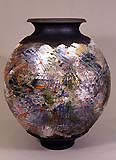

| Traduction
française 01/12/2000 de Smart.Conseil
(site: http://perso.wanadoo.fr/smart2000/)
avec la participation de Édouard Bastarache, "
l'Irréductible Québecois " (contact: edouardb@sorel-tracy.qc.ca
/ site http://www.sorel-tracy.qc.ca/~edouardb/
) du guide édité par:
Steven Branfman
Contact:
sbranfpots@aol.com
Auteur de: "Raku: A Practical Approach" (Raku:
une approche pratique) et de "The Potters Professional
Handbook" (Le manuel professionnel des potiers). Adresse: The Potters Shop, 31 Thorpe Rd, Needham MA 02494, USA
- tel 781/449 7687 |
| |
| Questions posées Fréquemment
sur le Raku: (revu
en mai 1999, Dernière publication 11/20/2000)
COPYRIGHT © 1996. Tous droits réservés. Contacter
l'auteur pour la permission de publier sous quelque forme
que ce soit.
| R.0 |
Qu'est-ce que le Raku ?
|
| |
|
| R.1
|
Paul Soldner
n'a-t-il pas inventé le Raku ?
|
| |
|
| R.2 |
Comment faire du Raku différent
par cuisson en fosse, dans la sciure, par enfumage
? |
| |
|
| R.3 |
Le Raku
est-il un procédé mono cuisson
où le biscuitage préalable n'est
pas nécessaire ? |
| |
|
| R.4 |
Le Raku est-il approprié
pour des produits d'usage courant ?
|
| |
|
| R.5 |
Qu'est-ce
qui caractérise une argile (au sens de
pâte) pour Raku ? |
| |
|
| R.6 |
Qu'est-ce qu'une glaçure
pour Raku ? |
| |
|
| R.7 |
A quelle
montre (cône) dois-je cuire en Raku ?
|
| |
|
| R.8
|
Comment obtenez-vous ces effets
métalliques brillants ? Quelquefois mes
glaçures ne trésaillent pas comme
je le voudrais. Que puis-je faire ?
|
| |
|
| R.9
|
Je n'obtiens
jamais d'effets à éclats métalliques
brillants. Comment puis-je obtenir plus d'effets
colorés dans mes glaçures ?
|
| |
|
| R.10
|
Puis-je préchauffer mes
pièces pendant la montée en température
du four (commencer avec un four froid) ?
|
| |
|
| R.11
|
Faut-il
utiliser un type de four précis ou bien
peut-on utiliser un four électrique pour
le Raku ? |
| |
|
| R.12
|
Lorsqu'il s'agit de fours Raku
on entend les termes de cheminée, carneau
de tirage, registre de tirage, enceinte de cuisson.
Comment s'appliquent-ils aux fours Raku ?
|
| |
|
| R.13
|
Pourquoi
ne puis-je atteindre une température
quelle que soit la quantité de gaz que
j'utilise ? |
| |
|
| R.14 |
Les pinces utilisées pour
sortir les pièces ne laissent-elles pas
des marques ? |
| |
|
| R.15 |
Je m'embrouille
avec le terme "réduction", pouvez-vous
m'expliquer ce que c'est ? |
| |
|
| R.16
|
Dois-je retirer mes pièces
du four pour leur faire subir une réduction
après cuisson ou bien introduire les
matériaux réducteurs dans l'enceinte
du four ? |
| |
|
| R.17 |
Est-ce que
différents types de matériaux
réducteurs donnent des effets différents
? |
| |
|
| R.18 |
Doit-il y avoir de la fumée
lorsqu'on fait du Raku ? |
| |
|
| R.19 |
Qu'est-ce
que du Raku sans enfumage ? |
| |
|
| R.20 |
Qu'entend-on par "engobe protecteur"
en Raku ? |
| |
|
|
| |
|
R.0 / retour
aux questions /
Qu'est-ce que le Raku ? Le Raku est une technique
de poterie qui a ses origines dans le Japon du XVI ème
siècle. Nous avons la quasi-certitude qu'il a été
développé par des potiers coréens
sous la domination japonaise, mais les circonstances exactes
de son développement et de sa découverte
sont un mystère. La technique du
Raku, comme d'autres techniques de poterie telles que
l'émaillage au sel et la cuisson en fosse, s'articule
essentiellement autour de son procédé de
cuisson, bien que l'implication dans le Raku soit souvent
plus profondément issue de sa philosophie, de ses
racines et de son sens culturel. Le Raku traditionnel
et notre interprétation occidentale du Raku sont
semblables sous bien des formes bien qu'ils montrent quelques
différences notoires.
Pour avoir une brève description du procédé
Raku il faut comprendre que la plupart des autres types
de poteries sont enfournés à froid et cuits
à une allure modérée jusqu'à
la température finale. Ce genre de cuisson peut
aller de 8 à 24 heures ou plus. Lorsque le four
a atteint sa température (généralement
déterminée à l'aide de cônes
pyrométriques) il est éteint et mis à
refroidir jusqu'à permettre son déchargement
à mains nues ou avec des gants. Le cycle de refroidissement
peut durer entre 12 et 24 heures ou plus. Les pièces
sont considérées comme achevées lorsqu'elles
sont défournées.En Raku, les pièces
peuvent être enfournées à froid mais
le plus souvent le four est préchauffé et
l'enfournement est fait à chaud. La cuisson est
menée à un rythme rapide avec atteinte de
la température finale dans un cycle court de 15
à 20 minutes (Cependant des cuissons Raku peuvent
durer plusieurs heures selon les types de pièces
et leurs exigences de cuisson).
La maturité de la glaçure est estimée
à l'œil sans l'utilisation de cônes ou d'appareils
de mesure. Lorsque que la cuisson est considérée
comme terminée, les pièces sont immédiatement
sorties du four. Étant donné qu'à
ce moment la glaçure est fondue, on utilise des
pinces ou d'autres outils de manutention.C'est là
l'étape du procédé où le Raku
traditionnel et contemporain diffèrent dans la
technique et les moyens.
Dans notre version occidentale le traitement des
pièces tend actuellement vers une phase de "réduction
après cuisson". Les pièces sont mises dans
un récipient avec des matières combustibles,
comme de la sciure, ou laissées et mises à
enfumer pendant un temps déterminé. L'atmosphère
carbonée réagit et modifie les glaçures
et la pâte, produisant des effets de surface uniques
sur les pièces. Certains donnent aux surfaces émaillées
des effets métalliques et craquelés et aux
pâtes des teintes noires. Après refroidissement
les pièces sont nettoyées avec un produit
abrasif pour enlever tous les résidus de suie et
de cendre. |
| |
|
R.1 / retour
aux questions /
haut de page
/ sommaire
/ ce
qu'il faut savoir
Paul Soldner n'a-t-il
pas inventé le raku ?
Pas exactement. Soldner
est un innovateur faisant partie des quelques responsables
de la popularisation du Raku commençant dans
ce pays (les U.S.A.) dans les années 1950. Le
Raku a été développé en
premier par des potiers coréens sous domination
japonaise à la fin du 16 ème siècle.
Les circonstances qui ont conduit à son lancement
et sa diffusion sont quelque peu mystérieuses.
|
| |
|
R.2 / retour
aux questions / haut
de page / sommaire
/ ce
qu'il faut savoir
Comment faire du Raku
différent par cuisson en fosse, dans la sciure,
par enfumage ? Ces types de cuisson sont souvent confondus
l'un et l'autre car elles peuvent avoir en commun des
caractéristiques similaires. En bref, les pièces
Raku sont le plus souvent cuites dans un type de four
plus ou moins conventionnel connu et exploité
pour la cuisson des glaçures. Les autres sont
des formes de cuisson primitive où les températures
atteintes sont généralement plus basses
et où les glaçures ne sont pas couramment
utilisées. Dans les cuissons primitives le "four"
consiste en un simple trou dans le sol (comme une fosse).
|
| |
|
R.3 / retour
aux questions /
haut de page
/ sommaire
/ ce
qu'il faut savoir
Le Raku est-il un
procédé mono-cuisson où le biscuitage
préalable n'est pas nécessaire ? Cuire des pièces
crues en Raku est un bon moyen pour tapisser le fond
de votre four de tessons. Toujours biscuiter au moins
à cône 08 (cône Orton 08 = 950°C)
avant émaillage et cuisson Raku.
|
| |
|
R.4 / retour
aux questions / haut
de page / sommaire
/ ce
qu'il faut savoir
Le Raku est-il approprié
pour des produits d'usage courant ? L'utilisation traditionnelle de vaisselle
Raku dans la cérémonie du thé japonaise
a contribué à la confusion dans le rôle
utilitaire des pièces Raku. Avec de très
rares exceptions, la vaisselle Raku est fragile, poreuse
et généralement impropre à l'usage
courant. A moins que ces articles si fragiles ne soient
traités à froid après cuisson avec
des matériaux comme des vernis polyuréthanes
ou acryliques ou avec des huiles de toutes sortes, ils
laisseraient fuire l'eau et finiraient par se fendre.
Considérez le Raku comme décoratif.
L'utilisation occasionnelle du Raku dans un rôle
utilitaire est envisageable, mais gardez à l'esprit
que la glaçure est tendre, qu'elle peut être
facilement ébréchée et finalement
avalée. Si vous devez utiliser vos pots pour
un usage alimentaire essayez de vous limiter à
une utilisation avec des aliments secs. La fragilité
de cette vaisselle rend aussi très discutable
la tenue des anses et autres poignées. |
| |
|
R.5 / retour
aux questions /
haut de page
/ sommaire
/ ce
qu'il faut savoir
Qu'est-ce qui caractérise
une argile (au sens de pâte) pour Raku ? Une argile pour Raku
est n'importe laquelle des argiles qui peut supporter
la cuisson Raku avec succès. Cela comprend la
plupart de tous les types d'argiles. Comme je le dis
dans ma boutique "Je n'ai jamais rencontré d'argile
qui ne supporte pas le Raku" ! Bien que généralement,
une argile apte au Raku nécessite de contenir
un peu de terre réfractaire ou des matériaux
réfractaires équivalents pour pouvoir
supporter le choc thermique brutal du procédé
Raku. Cela comprend la plupart des argiles à
grès courantes. L'argile n'a pas à être
chargée avec une chamotte trop grossière
mais doit être suffisamment dégraissée
pour se dilater et se rétracter sans casser.
La plupart des fournisseurs d'argile peuvent vous aider
à choisir une pâte appropriée. Les
autres caractéristiques que vous devez rechercher
sont celles qui vous sont personnelles comme la plasticité,
la couleur, le texture, etc. Rien ne doit être
mis à l'écart afin d'obtenir une bonne
argile à Raku performante.
|
| |
|
R.6 / retour
aux questions / haut
de page / sommaire
/ ce
qu'il faut savoir
Qu'est-ce qu'une glaçure
pour Raku ? La réponse à cette question
est similaire à celle concernant les argiles.
N'importe quelle glaçure que vous pourrez cuire
avec succès en Raku est une glaçure pour
Raku. Les facteurs les plus importants dans le choix
des glaçures pour Raku sont la température
à laquelle elles doivent cuire, comment vous
prévoyez de les utiliser et quels genres d'effets
vous recherchez. Vous devez aussi vous rappeler que
si vous utilisez différentes glaçures
sur la même pièce ou dans une même
charge de cuisson, à moins qu'elles ne cuisent
toutes à la même température, vous
devrez faire face à différents degrés
de maturité. Pourtant, ce n'est pas parce qu'une
glaçure est formulée pour cuire à
une température plus haute que votre gamme usuelle
que vous devrez l'éliminer de votre palette.
Essayez de réaliser avec vos glaçures
une diversité d'effets de surface allant de textures
sèches à des surfaces à haute brillance.
Ne vous limitez pas à des glaçures "faites
maison" ou à des compositions personnelles. Essayez
des glaçures commerciales de basse température
pour des résultats étonnants. |
| |
|
R.7 / retour
aux questions /
haut de page
/ sommaire
/ ce
qu'il faut savoir
A quelle montre (cône)
dois-je cuire en Raku ? Les seuls cônes
qui doivent être utilisés aux environs
d'un four Raku sont des cônes de crème
glacée.A cause de la rapidité
de cuisson, des variations d'atmosphère, des
différents produits enfournés et d'autres
facteurs, les cônes pyrométriques ne sont
pas appropriés pour rendre compte de la chauffe
et de la température, aussi ne sont-ils pas utilisés.
La majorité des potiers Raku cuisent leurs pièces
en visualisant l'état de fusion de la glaçure
en temps réel comme indication de maturité.
Toutefois, un grand nombre de potiers utilisent des
pyromètres ou des cônes pour approcher
l'instant de maturité de la glaçure, pour
ce faire, ils observent par un judas (trou, viseur)
pratiqué dans la paroi du four. La température
de la cuisson Raku dépend surtout de la glaçure
utilisée. La plupart du Raku est cuit dans de
domaine des cônes 010 à 06 (Orton cône
010 = 905°C, 06 = 1015°C). Rappelez-vous cependant
que c'est vous, en tant que maître d'œuvre, qui
déciderez si la glaçure doit être
à maturité, trop cuite ou incuite. Si
une glaçure n'est pas assez brillante, ne présente
pas d'effets craquelés ou métalliques,
ou ne montre aucune des autres caractéristiques
recherchées, vous devrez adapter votre cuisson.
|
| |
|
R.8 / retour
aux questions / haut
de page / sommaire
/ ce
qu'il faut savoir
Comment obtenez-vous
ces effets métalliques brillants ? Quelquefois
mes glaçures ne trésaillent pas comme
je le voudrais. Que puis-je faire ? En considérant que vous utilisez les
glaçures adéquates, les effets métalliques
et lignes noires craquelées sont un résultat
de cuisson poussée au maximum de maturité
suivie d'un traitement de réduction en post-cuisson.
Vous devez extraire rapidement votre pièce du
four vers le récipient de réduction et
la recouvrir avant qu'elle refroidisse trop sinon la
réduction de post-cuisson ne sera pas efficace.
Des effets craquelés importants dépendent
souvent d'une application en fine couche de la glaçure. |
| |
|
R.9 / retour
aux questions /
haut de page
/ sommaire
/ ce
qu'il faut savoir
Je n'obtiens jamais
d'effets de couleurs vives brillantes. Comment puis-je
obtenir plus d'effets colorés dans mes glaçures
? C'est exactement l'inverse
du problème et de la question précédente.
Les couleurs vives demandent un degré d'oxydation
après cuisson afin de se développer. Il
y a plein de façons pour obtenir çà.
Lorsque vous ôtez la pièce du four, vaporisez
avec de l'eau les zones où vous souhaitez plus
de couleur avant de les disposer dans le récipient
de réduction. Cela oxydera et refroidira la glaçure.
Une autre méthode consiste à maintenir
la pièce dans l'air pendant 10 à 30 secondes
avant la réduction. Laissez le matériau
combustible s'enflammer et couvrez le récipient
lorsque les flammes sont pleinement développées.
D'autres potiers ne découvriront le récipient
de réduction qu'après un court délai
permettant au combustible de se ré-enflammer
en ventilant la pièce. En procédant ainsi
et avec d'autres méthodes semblables vous apprendrez
comment contrôler le développement des
effets métalliques et des couleurs sur vos pièces
de même que celui des zones grises ou noires sur
les parties non émaillées.
|
| |
|
R.10 /
retour aux questions
/ haut de page
/ sommaire
/ ce
qu'il faut savoir
Puis-je préchauffer
mes pièces pendant la montée en température
du four (commencer avec un four froid) ? J'utiliserai un four du type bidon garni
de fibre avec un couvercle escamotable par élévation,
pas un de ceux où le four entier se lève.
Je ne vois pas comment mes pots seront suffisamment
préchauffés en les posant juste sur le
couvercle... Est-ce qu'elles seront assez chaudes posées
sur un couvercle métallique garni de fibre ? Cette question indique un malentendu courant
à propos du Raku. Les seules fois où vous
aurez à préchauffer vos pièces
seront si vous devez procéder à plusieurs
enfournements lors d'une même cuisson. Le premier chargement devrait toujours se
faire dans un four froid mis à chauffer doucement.
C'est seulement si vous devez procéder à
d'autres chargements en cours de cuisson que vous devrez
préchauffer vos pièces sur ou contre le
four.Si le couvercle du four est constitué
d'une armature en grillage garnie de fibre vous devriez
avoir assez de chaleur radiante. Placer les pots près
de la sortie de la cheminée ainsi ils se réchaufferont
grâce au courant d'air chaud. Faites attention,
ne les placez pas trop serrés ou trop rapidement
ils pourraient se casser.Après une préchauffe sur le
dessus du four vous pouvez disposer les pièces
autour de la base du four après avoir relevé
la chambre de cuisson, laissez-les se réchauffer
pendant une ou deux minutes, puis placez-les dans le
four en attendant encore une minute, remettez la chambre
de cuisson en place, au bout d'une minute rallumez le
brûleur. |
| |
|
R.11 / retour
aux questions /
haut de page
/ sommaire
/ ce
qu'il faut savoir
Faut-il utiliser un
type de four précis ou bien peut-on utiliser
un four électrique pour le Raku ? A peu près
n'importe quel type de four peut être utilisé
pour le Raku tant qu'il permet de répondre aux
exigences du procédé. Il peut être
installé à l'extérieur ou à
l'intérieur à proximité d'une sortie
au grand air.Vous devez avoir la
possibilité de vous mouvoir facilement pour atteindre
vos pièces et les extraire du four.Si vous devez cuire
en effectuant plusieurs enfournements la température
du four doit être facile à contrôler.Un four électrique
est tout à fait convenable pour du Raku bien
qu'il y ait une prudence particulière à
tenir en considération. Vous devez vous rappeler
que vous vous exposez à un courant électrique
sous tension lorsque que vous ouvrez un tel four aussi
devez-vous vous protéger de tout contact avec
les conducteurs et les résistances (Plus de détails
seront donnés sur ce point dans une révision
ultérieure de ces FAQ).
|
| |
|
R. 12 /
retour aux questions
/ haut de page
/ sommaire
/ ce
qu'il faut savoir
Lorsqu'il s'agit de
fours Raku on entend les termes de cheminée,
carneau de tirage, registre de tirage, enceinte de cuisson.
Comment s'appliquent-ils aux fours Raku ? Tous les fours à combustible ont besoin
d'une ouverture pour évacuer les gaz, d'un contrôle
du flux d'air, et d'une ventilation suffisante. Les
fours conventionnels ont un conduit de cheminée,
un registre de tirage, et un ou des carneau(x) de tirage.
La cheminée est un conduit qui permet d'évacuer
les fumées après qu'elles aient circulé
dans le four vers le carneau de tirage. Le registre
de tirage des fumées est un dispositif, généralement
une plaque réfractaire, qui coulisse de part
et d'autre du carneau pour en contrôler l'ouverture
permettant ainsi de maîtriser l'échappement
des fumées et leur mélange avec l'air.
Les fours Raku sont généralement petits
et surpuissants. La plupart ont une simple ouverture
sur le haut de l'enceinte de cuisson couverte par un
morceau de plaque réfractaire. L'enceinte du four est essentiellement composée
par la cheminée et par l'ouverture du conduit
de cheminée, une plaque d'enfournement sert de
registre. |
| |
|
R. 13 / retour
aux questions /
haut de page
/ sommaire
/ ce
qu'il faut savoir
Pourquoi ne puis-je
atteindre une température quelle que soit la
quantité de gaz que j'utilise ? C'est la question
la plus courante concernant la cuisson Raku. Une montée
en température réussie dans tout four
à combustion dépend du mélange
correct entre l'air et le combustible. Un four plus
chaud ne dépend pas nécessairement d'une
plus grande quantité de combustible ! S'il y
a trop de combustible l'atmosphère sera enfumée
avec beaucoup de flammes, et la température ne
montera pas. De même s'il n'y a pas assez d'air,
la température stagnera ou chutera. Habituellement,
la solution au cas où le four ne monterait pas
en température consiste à augmenter l'air
dans le mélange air/combustible. Dans un four
à gaz cela peut être fait en augmentant
la quantité d'air dans le brûleur ou autour
du brûleur. Vous pouvez aussi simplement ouvrir
plus la cheminée (l'ouverture située au-dessus
du four). La plupart des potiers un brûleur de
type venturi muni d'un disque que l'on tourne pour ouvrir
ou fermer. Ouvrez-le pour avoir plus d'air. Si vous
utilisez un brûleur équipé d'une
soufflerie ou d'un ventilateur, augmentez le débit
d'air. Expérimentez tout çà pour
parvenir à un mélange correct, mais soyez
patient !
|
| |
|
R.14 /
retour aux questions
/ haut de page
/ sommaire
/ ce
qu'il faut savoir
Les pinces utilisées
pour sortir les pièces ne laissent-elles pas
des marques ? Cela arrive quelques fois. Plus souvent pourtant
la glaçure est encore assez en fusion pour qu'une
fois la pièce relâchée par les pinces,
les traces s'atténuent et s'égalisent.
Dans un cas comme dans l'autre les marques de pinces
ne seraient pas considérées comme des
défauts mais plutôt comme les caractéristiques
du Raku. |
| |
|
R.15 / retour
aux questions /
haut de page
/ sommaire
/ ce
qu'il faut savoir
Je m'embrouille avec
le terme "réduction", pouvez-vous m'expliquer
ce que c'est ? Réduction est
le terme de cuisson qui exprime le manque d'oxygène
dans le processus de la combustion.Cette pénurie
d'oxygène dans l'atmosphère oblige le
carburant a rechercher de l'oxygène n'importe
où pour qu'une combustion plus complète
puisse se produire. Cela peut avoir lieu lors d'une
cuisson comme celle d'un "grès en réduction".
Dans ce cas classique, l'oxygène complémentaire
est pris dans les liaisons chimiques de la masse de
la pâte et dans la glaçure. Le résultat
est caractéristique des effets de réduction.La réduction
telle qu'elle est pratiquée dans la technique
du Raku a lieu à l'extérieur du four hors
de la cuisson en cours comme décrit précédemment.
Toutefois, parce que vous faites du Raku, cela ne veut
pas dire que vous ne pouvez pas expérimenter
la cuisson en réduction classique.
|
| |
|
R.16 /
retour aux questions
/ haut de page
/ sommaire
/ ce
qu'il faut savoir
Dois-je retirer mes
pièces du four pour leur faire subir une réduction
après cuisson ou bien introduire les matériaux
réducteurs dans l'enceinte du four ? Comme décrit précédemment,
la réduction après cuisson est normalement
faite en ôtant la pièce du four et en la
plaçant dans un récipient contenant vos
matériaux combustibles. Certaines situations
peuvent rendre cette opération difficile pour
extraire les pièces du four lorsqu'elles sont
très chaudes. Par exemple, votre pièce
peut être trop grande ou embarrassante à
cause d'une anse. Dans ce cas vous pouvez terminer dans
de bonnes conditions des traitements après cuisson
en éteignant le four, ajoutant vos matières
combustibles dans l'enceinte de cuisson, et fermant
toutes les ouvertures y compris la cheminée,
le judas et l'ouverture du brûleur. Au mieux,
l'enceinte de cuisson sera presque close et étant
donné que la réduction réelle dépend
de l'étanchéité absolue de cette
enceinte, vous réussirez partiellement votre
réduction. Si votre four est du type "à
élévation" en fibre, alors vous devrez
essayer de l'ôter et de le remplacer par un fût
métallique ou un bidon pour faire la phase réductrice.
|
| |
|
R.17 / retour
aux questions /
haut de page
/ sommaire
/ ce
qu'il faut savoir
Est-ce que différents
types de matériaux réducteurs donnent
des effets différents ? Pour une réponse
rapide on peut dire oui. Pour traiter le sujet en profondeur
c'est un peu plus compliqué !Voici une réponse
modérée: Vos effets réducteurs
sont bien évidemment influencés par la
quantité de carbone contenue dans l'atmosphère
qui entoure votre poterie. En d'autres termes, à
combien de fumée votre poterie sera-t-elle rapidement
exposée. Certaines matières ont la faculté
de libérer plus de carbone que d'autres. L'état
de ces matières (humide, moite, sec) de même
que leur finesse comme dans le cas de matières
du bois (sciure, copeaux, éclats) peuvent être
importants. Le type d'essence de bois peut aussi influencer
vos résultats.
|
| |
|
R.18 /
retour aux questions
/ haut de page
/ sommaire
/ ce
qu'il faut savoir
Doit-il y avoir de
la fumée lorsqu'on fait du Raku ? Le Raku ne demande pas obligatoirement de
l'enfumage. Il y a deux aspects de ce procédé
qui ont la faculté de produire de la fumée.
Si vous utilisez un four à combustible (en opposition
à four électrique) il est probable qu'il
se produira un peu de fumée pendant la cuisson.
Si vous faites de la réduction après cuisson
il y aura aussi production de fumée. La quantité
de fumée sera fonction de l'efficacité
de votre technique de réduction, de la nature
et de la quantité de matières que vous
utilisez. Si vous réduisez dans un récipient,
plus le couvercle sera clos moins la fumée s'échappera.
Il y a des techniques de réduction qui font moins
de fumée que d'autres. Bien sûr si vous
ne réduisez pas hors cuisson et refroidissez
simplement votre pièce en la sortant du four
il n'y aura pas de fumée. |
| |
|
R.19 / retour
aux questions /
haut de page
/ sommaire
/ ce
qu'il faut savoir
Qu'est-ce que du Raku
sans enfumage ? Le Raku sans enfumage
n'est pas vraiment du Raku sans fumée. Le terme
a été inventé par Jerry Caplan
qui a perfectionné sa technique pendant des années.
C'est une méthode de réduction hors cuisson
qui est conçue pour produire un minimum de fumée
en gardant la chambre de réduction aussi étanche
que possible. Cela peut être réalisé
en utilisant un assemblage permettant de fermer hermétiquement
le couvercle grâce à un joint de papier
ou de chiffon humide. L'étanchéité
peut aussi être faite en renversant le récipient
de réduction sur un lit de sable ou de terre.
Formez un anneau de sable ou de terre sur le sol qui
s'adaptera à l'ouverture de votre récipient
lorsque vous le retournerez dessus. Disposez vos matières
réductrices à l'intérieur de cet
anneau. Disposez rapidement votre poterie sur les matières
et couvrez-la avec le récipient en enfonçant
son rebord dans le sable. Rapporter du sable autour
du récipient pour renforcer l'étanchéité.
|
| |
|
R.20 /
retour aux questions
/ haut de page
/ sommaire
/ ce
qu'il faut savoir
Qu'entend-on par "engobe
protecteur" en Raku ? L'engobe protecteur fait référence
à de multiples techniques qui utilisent l'application
d'une barbotine d'argile sur la surface d'une poterie.
Cet engobe est formulé de manière à
peler pendant la cuisson sans adhérer à
la surface. Lorsque l'engobe pèle, rétrécit
et se détache de la surface il expose progressivement
la poterie à des niveaux de réduction
différents. Lorsque la pièce est refroidie,
s'il reste de l'engobe sur la pièce il est retiré
en nettoyant et en grattant. Pour aller plus loin dans
ce procédé décoratif, vous pouvez
graver et tracer des décors dans la couche d'engobe.
|
| |
|
Pour un guide complet contenant tout ce que
vous désirez savoir sur la pratique du Raku,
consultez "Raku: A Practical Approach"
(Raku: une approche pratique) de Steven
Branfman, l'auteur de ces FAQ. Le livre
est disponible dans votre librairie spécialisée
préférée, chez votre fournisseur
pour articles de poterie, ou vous pouvez aussi le commander
directement à l'atelier de Steven, "The Potters
Shop".Il vous fera aussi parvenir son catalogue
contenant plus de 600 titres de livres et vidéos. Tel: 781/449 7687 ou e-mail sbranfpots@aol.com Réalisation et
première publication juin 1996. Révision
5/99. Dernière publication 11/20/2000© Copyright Steven
Branfman. sbranfpots@aol.com
|
| retour aux questions
/ haut
de page /
sommaire
/ ce
qu'il faut savoir |